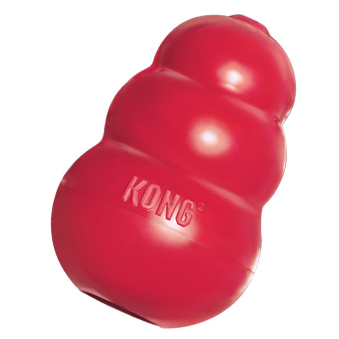
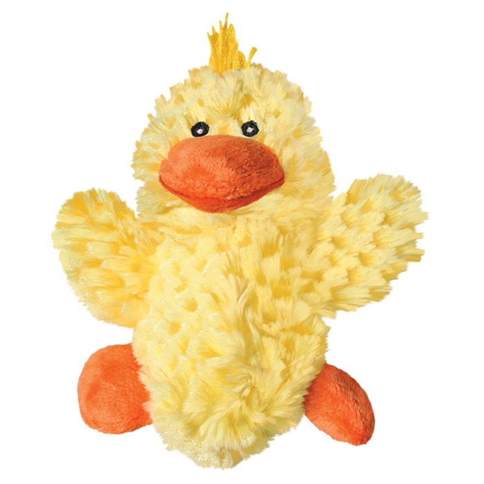
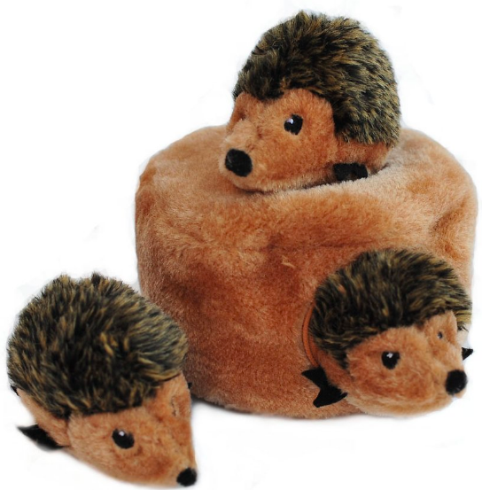
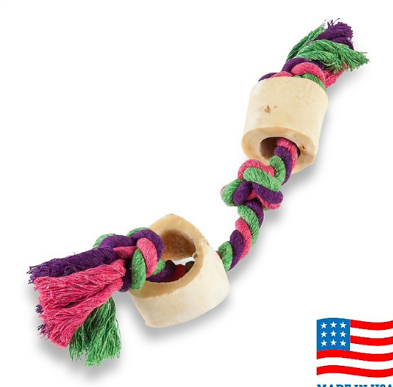
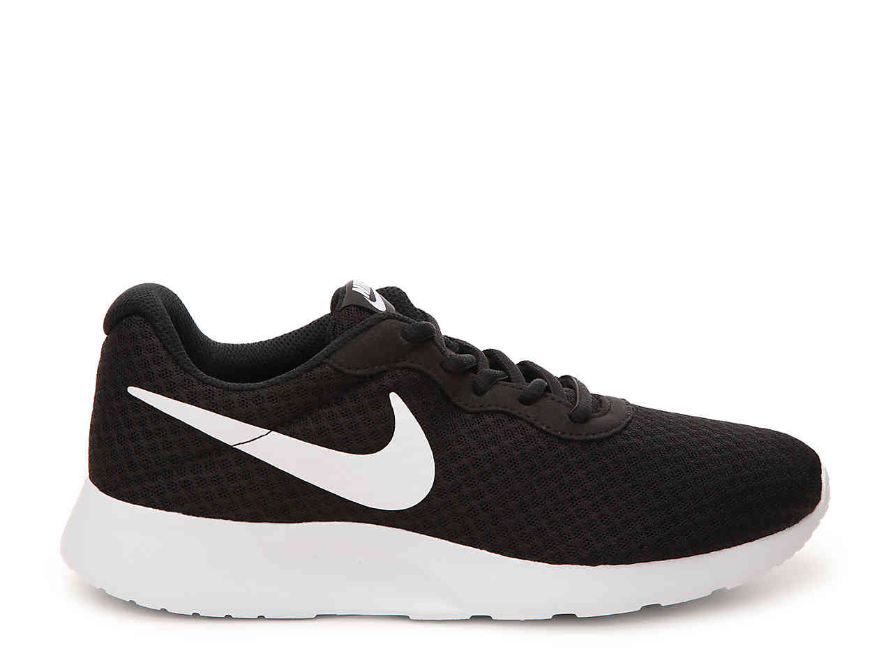

Blog
My Favorite Toys!
Dear Friends,
Ever since my mom and dad have started classes, I've had a lot of free time home alone.
So what better way to spend my time, than to blog about my thoughts and ideas. My mom and dad call me an "aggressive-chewer",
but I don't get it. What's the point of a toy if I can't destroy it.
So for my first blog, I want to write about my 5 favorite toys and their life-expectancy.
1. Red Kong

This is an amaze-KONG toy. All my parent's friends rave about how this toy will never break and
boy, they were right. I have tried and tried, and it is still in tact. I'm not sure what it's made out of
and I haven't decided if I like the taste or not, but if I start chewing on it in front of my parents, they sometimes
put a bone-cookie in it or my favorite, peanutbutter!
How long did it last?: Basically immortal.
2. Mr. Quacker

Mr. Quacker was my best friend, and was one of my first toys when I was first adopted. He went on almost every adventure with me like,
when I had to go outside to pee, or when I went on long car rides. The best part was, every time I chewed him, he made noises.
That's how I knew he was really listening to everything I had to say. I will always think of Mr. Quacker with the fondest memories.
How long did it last?: not long enough, 2 months.
3. Hide-A-Hedgie

The hedgies were so teenie weenie, but I loved when my mom and dad hid them inside the log because then I could pull them out.
Mom and dad always tried to challenge me, but I pulled out all the hedgies in 2.5 seconds.
My favorite thing to do when I first woke up was to pick up a hedgie and relentlessly chew, while running around the
living room - squeaking loud and proud for all to hear.
How long did it last?: There are still 1 and a half.
4. Rope Bones

The rope bones tasted surprisingly well. I love tug rope and I love bones, so it seemed like the perfect toy.
Until, my mom and dad started finding pieces of rope in my poop (oops!). I guess I was eating a little too much.
But, once I set my mind to chewing, I can't be stopped.
How long did it last?: rope, long deaaaddddddd; bones, still here yay
5. **SHHHH TOP SECRET SHHHH**

I had to put a disclaimer incase my parents saw, since this is an unofficial, but official toy.
But, boy do I love sneakers. I have really really really like the really nice, expensive ones. They taste better!
At first, I thought mom and dad left their shoes out for me to play with, but then they started putting them where I couldn't reach
and I got the hint, they weren't meant for play. But sometimes, mom and dad forget and I can't help myself.
How long did it last?: less than one of mom and dad's 50-minute lectures.